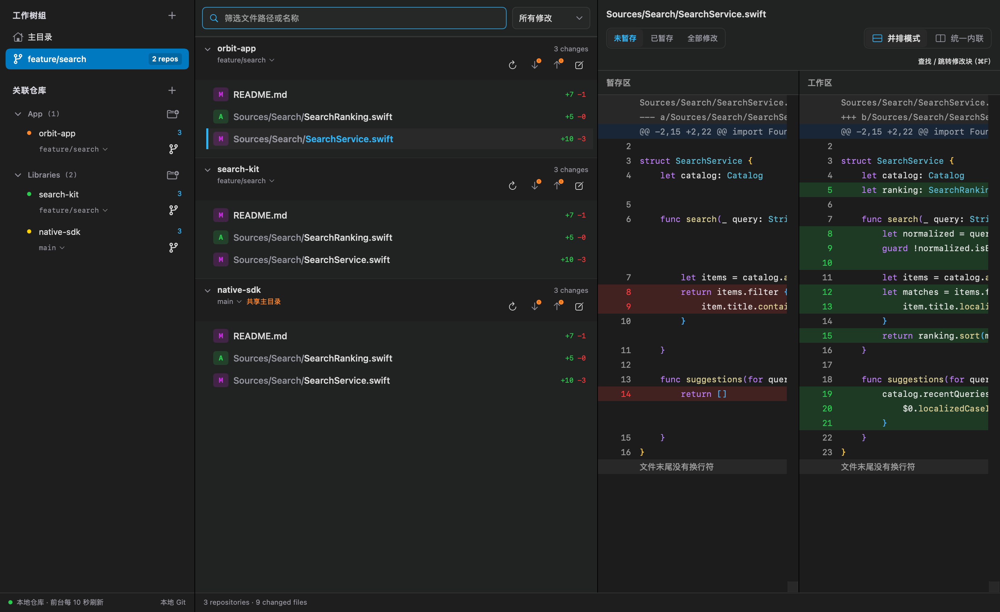
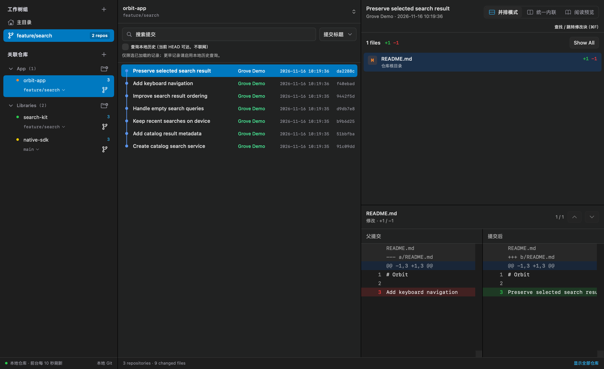
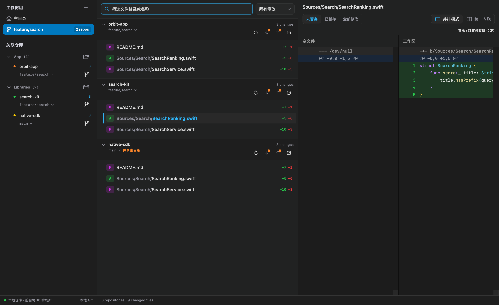

把 diff 看清楚。
并排与统一视图、语法高亮、查找和空格放大预览。图片、SVG、Android VectorDrawable 与 Markdown 也有各自的预览。
为多仓库工程打造的原生 macOS Git 客户端。把相关 worktree 放进一组，在同一个窗口看清整套改动。
0.1.2 Preview · Apple Silicon · macOS 14+
未公证预览版，首次打开需手动允许。 安装说明 ↓

App 和共享库在做新功能，SDK 继续用主目录。工作树组记住每个仓库该看哪里，省去逐个寻找 checkout。
试着选择工作树组
交互示意 · 不执行 Git 操作
两仓库匹配 feature/search，SDK 沿用主目录。
工程定义有哪些仓库，仓库组整理侧边栏，工作树组选择一套 checkout。你也可以单独指定某个仓库的 worktree，选择会为当前组保存。
选择工作树组只切换浏览目录，不会批量切分支。Grove 只发现你明确添加的仓库里的 worktree，浏览与自动刷新使用本地 Git 数据。
从工程的修改分布，到文件的增删细节，再到各仓库的本地历史。
并排与统一视图、语法高亮、查找和空格放大预览。图片、SVG、Android VectorDrawable 与 Markdown 也有各自的预览。

查看单仓库提交图，或把多个仓库的提交合并为时间线。

⌘K 快速切换，⌘R 刷新。回到窗口即更新，已访问页面保留浏览状态。
让本机 Codex、Claude Code 或 OMP 读取改动和你选择的提交 Skill，生成按完整文件拆分的方案。编辑提交说明，核对每笔准确 diff，确认后才创建本地提交。
Agent 使用已有模型服务，分析内容可能由该服务处理。
保留 hook 和签名，保留未选中的暂存内容；状态变化时拒绝执行旧方案。
对单个仓库明确执行 Fetch、Pull 或 Push。Pull 仅 fast-forward，Push 不强推，浏览时不自动 fetch。
从本地已有仓库开始。新建工程、添加仓库，再选一个工作树组。
下载 Apple Silicon 版 ↗0.1.2 Preview · ZIP · 仅适用于 M 系列芯片 Mac
在 GitHub 查看源码 ↗打包需要含 Icon Composer ictool 的完整 Xcode，以及登录钥匙串中可用的代码签名身份。
zsh scripts/build-app.sh
open dist/Grove.app在仓库根目录执行。通过 GROVE_SIGNING_IDENTITY 指定已有证书；默认本机开发身份为 MyGit Local Code Signing。
构建与签名指南（中文）↗